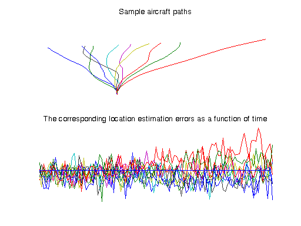
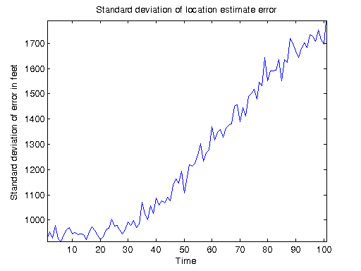

Sequential Radar Tracking Simulation
This demo performs a Monte Carlo simulation of a radar station that tracks the path of an aircraft. The radar station uses the radar equation to estimate the aircraft position. We introduce measurement errors as a random variable, and the radar station performs Kalman filtering to try to correct for them. To estimate the effectiveness of the Kalman filter, we perform repeated simulations, each time having the aircraft travel along a randomly chosen path.
For details about the computations, open the pctdemo_model_radar model.
Prerequisites:
Related demos:
Contents
Load the Demo Settings and the Data
We start by getting the demo difficulty level. If you want to use a different demo difficulty level, use paralleldemoconfig and then run this demo again. See Customizing the Settings for the Demos in the Parallel Computing Toolbox for full details.
difficulty = pctdemo_helper_getDefaults();
We define the number of simulations and the length of each simulation in pctdemo_setup_radar. The demo difficulty level controls the number of simulations we perform. The function pctdemo_setup_radar also shows examples of the different paths that the aircraft can take, as well as the error in the estimated aircraft location. You can view the code for pctdemo_setup_radar for full details.
[fig, numSims, finishTime] = pctdemo_setup_radar(difficulty); startClock = clock;
Run the Simulation
We let the pctdemo_task_radar function perform numSims simulations, and it will return a matrix of the size (finishTime + 1)-by-numSims. You can view the code for pctdemo_task_radar for full details.
residual = pctdemo_task_radar(numSims, finishTime);
Measure the Elapsed Time
The time used for the sequential computations should be compared against the time it takes to perform the same set of calculations using the Parallel Computing Toolbox in the Distributed Radar Tracking Simulation demo. The elapsed time varies with the underlying hardware.
elapsedTime = etime(clock, startClock);
fprintf('Elapsed time is %2.1f seconds\n', elapsedTime);
Elapsed time is 94.9 seconds
Plot the Results
We use the simulation results to calculate the standard deviation of the range estimation error as a function of time. You can view the code for pctdemo_plot_radar for full details.
pctdemo_plot_radar(fig, residual);